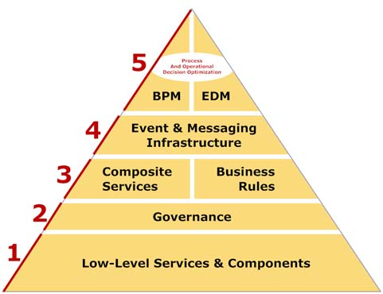

Autumn 2014

Autumn 2014
Noooo… :
package main.java;
public class TestServer(){
void startServer();
Double getGDPByCountryCode(double latitude, double longitude);
}Using a String for CountryCode and 2 Doubles for location works.
String getCountryCode(double latitude, double longitude);
Double getGDPByCountryCode(String countryCode);More readability and safety : Make a CountryCode and Location class which checks the bounds.
CountryCode getCountryCode(Location location);
GDP getGDPByCountryCode(CountryCode countryCode);Should be used early in the call chain (early error detection)
Overhead is minimal.
Tunneling everything through GET
http://example.com/some-api?method=deleteCustomer&id=1234Breaking self-descriptiveness

Picture credit:Open source SOA (Jeff Davis)